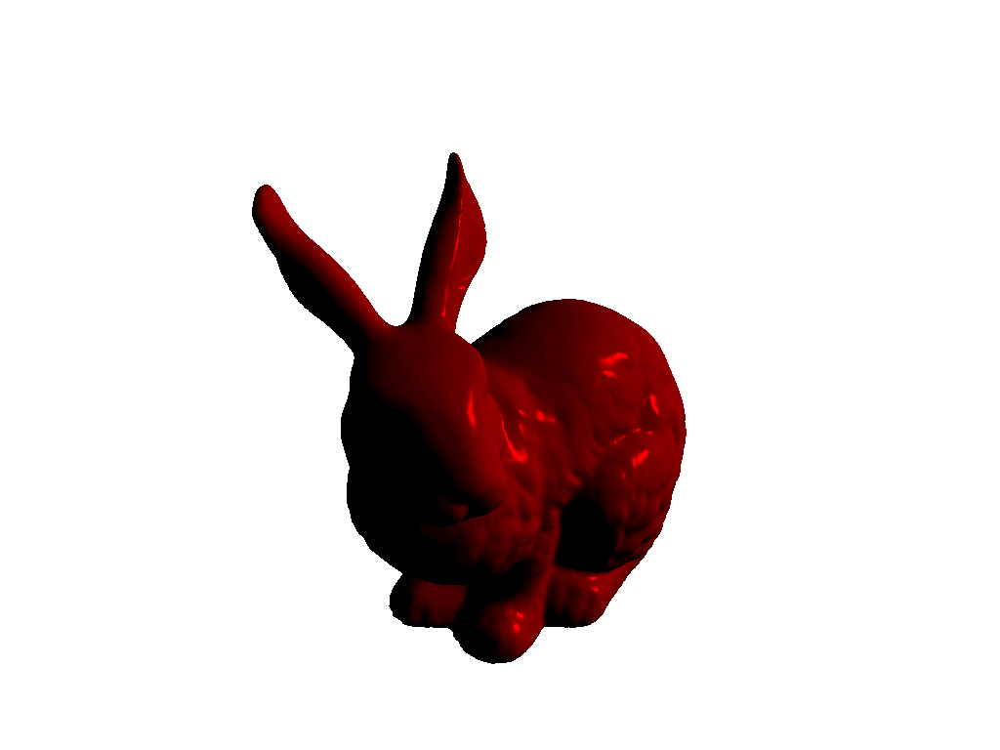
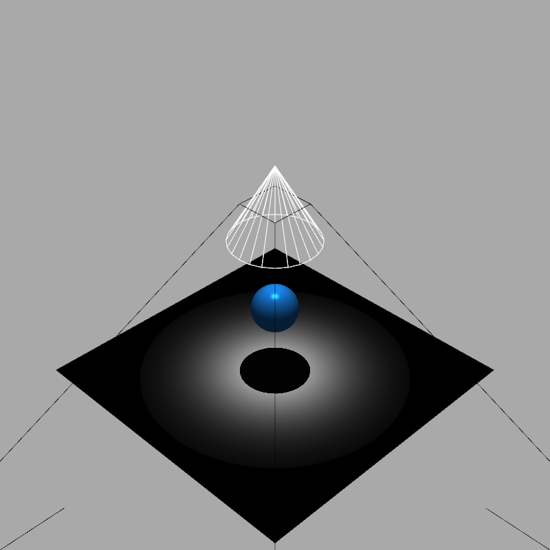

ライト#
pyvista.Light クラスは， vtk.vtkLight クラスに追加機能とPython APIを追加します． pyvista.Plotter オブジェクトには，ほとんどの場合に適切に機能するデフォルトのライトセットが付属していますが，多くの場合，より実践的なライトへのアクセスが必要です．
簡単な例#
原点を照らす赤いスポットライトを作成し，ライティングなしのシーンを作成して，ライトを手動で追加します．
import pyvista as pv
from pyvista import examples
light = pv.Light(position=(-1, 1, 1), color='red')
light.positional = True
import pyvista as pv
from pyvista import examples
plotter = pv.Plotter(lighting='none')
plotter.background_color = 'white'
mesh = examples.download_bunny()
mesh.rotate_x(90, inplace=True)
mesh.rotate_z(180, inplace=True)
plotter.add_mesh(mesh, specular=1.0, diffuse=0.7, smooth_shading=True)
plotter.add_light(light)
plotter.show()

詳細な例は 照明 を参照してください．
ライト API#
pyvista.Light インスタンスには，ヘッドライト，カメラライト，シーンライトの3つのタイプがあります．ヘッドライトは常にカメラの軸に沿って輝き，カメラライトはカメラに対して固定位置を持ち，シーンライトはシーンに対して配置されるため，カメラの周りを移動してもシーンのライティングには影響しません．
ライトには，ライトの軸を定義する position と focal_point があります．これらの意味は，ライトのタイプによって異なります．ライトのカラーは，アンビエント，拡散，スペキュラの各コンポーネントに応じて設定できます．明るさは intensity プロパティで設定でき，書き込み可能な on プロパティはライトをオンにするかどうかを指定します．
ライトはディレクショナル (無限に離れた点源を意味します) または positional のいずれかです．ポジションライトには，ライトのジオメトリと空間分布を記述する追加のプロパティがあります． cone_angle プロパティと exponent プロパティは，ライトビームの形状とそのビーム内のライト強度の角度分布を定義します．距離による光のフェードは， attenuation_values プロパティを使用してカスタマイズできます．ポジションライトでは，ワイヤフレームを使用してライトのシェイプとカラーを表すアクターを使用することもできます． show_actor() を参照してください ．
cone_angle が90度未満の位置ライトはスポットライトと呼ばれます．スポットライトは一方向性であり，ビーム成形特性，すなわち exponent と減衰を完全に利用します．ただし，スポットライト以外の位置ライトは，実際のライトの位置にあるポイントソースのように機能し，空間のすべての方向を照らします．光源からの距離に応じた減衰が表示されますが，ビームは空間内で等方性です．対照的に，ディレクショナルライトは無限に離れたポイントソースとして機能するため，単一方向ですが減衰しません．
シャドウ#
指向性ライトを使用すると，複雑なライティングシナリオを作成できます．たとえば，ライトをアクター(この場合は球体)の真上に配置して，その真下にシャドウを作成できます．
次の例では，位置ライトを使用して，ライトの円錐角度と指数値を制御し，球体の下に日食のようなシャドウを作成します．
import pyvista as pv
plotter = pv.Plotter(lighting=None, window_size=(800, 800))
# create a top down light
light = pv.Light(position=(0, 0, 3), show_actor=True, positional=True,
cone_angle=30, exponent=20, intensity=1.5)
plotter.add_light(light)
# add a sphere to the plotter
sphere = pv.Sphere(radius=0.3, center=(0, 0, 1))
plotter.add_mesh(sphere, ambient=0.2, diffuse=0.5, specular=0.8,
specular_power=30, smooth_shading=True,
color='dodgerblue')
# add the grid
grid = pv.Plane(i_size=4, j_size=4)
plotter.add_mesh(grid, ambient=0, diffuse=0.5, specular=0.8, color='white')
# set up and show the plotter
plotter.enable_shadows()
plotter.set_background('darkgrey')
plotter.show()

注釈
特定のウィンドウサイズでシャドウをレンダリングする場合，VTKに既知の問題があります． window_size パラメータを試してみることをお勧めします．
APIリファレンス#
|
Light クラス． |